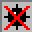

How To Play
How To Play
Overview:
Minesweeper is a game for those who enjoy applying their problem solving and logic skills.
The game begins with a set of empty tiles. Behind the scenes, there will be mines placed
at random positions. Your objective is to find the position of all the
mines without actually denoting the mines. If this happens, you lose. If you are able to
successfully locate all the mines without denoting any of them, you win! Read more below
to see how to you can successfully locate the mines.
Steps To Success:
- To start a new game, click on 'New Game' in the menu bar.
- Click on a random cell. I can guarantee you that you won't land on a mine!
- You probably want to click randomly on cells until a set of 5 or 6 cells open up.
As you uncover the cells, you will see numbers on cells. These numbers signify
how many mines are touching the cell.
- Knowing this information, place a flag (right click) on a cell you are absolutely
certain of being a mine. 'Probably' doesn't work in this situation.
- If you are not sure about a certain tile, place a question mark at the position.
This serves as a reminder of your suspicions.
- This will be timed. So be sure to do this as fast as you can!
Types of Cells:
 The game begins with a set of empty cells. You must click on these cells
to see what is behind it!
The game begins with a set of empty cells. You must click on these cells
to see what is behind it!
 If you land on a tile with a number, the number signifies how many mines are
touching that cell.
If you land on a tile with a number, the number signifies how many mines are
touching that cell.
 If you suspect that there is a mine at that position, you may place a flag as
a reminder of your suspicion!
If you suspect that there is a mine at that position, you may place a flag as
a reminder of your suspicion!
 If you are not sure about a particular cell, you may place this tile.
If you are not sure about a particular cell, you may place this tile.
This is what a mine actually looks like. You want to avoid clicking on this
cell otherwise the game will end.

When you click on a mine, this will appear. It means that you have lost
the game.
 If you somehow locate all the mines (by placing a flag at the position),
you will get this face on top of the game! It means that you have won the game!
If you somehow locate all the mines (by placing a flag at the position),
you will get this face on top of the game! It means that you have won the game!
Have fun and Good Luck!